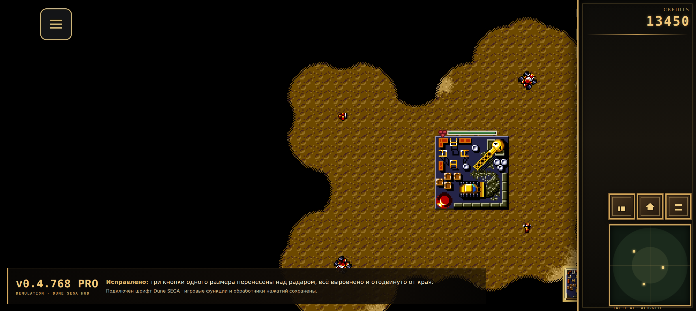

SEGA MEGA DRIVE · 1994 STYLE
DEMULATION
DUNE: The Battle for Arrakis — HUD Mod
PRO-сборка: три одинаковые квадратные кнопки перенесены в один ряд сверху над радаром, радар и карта отодвинуты от края экрана, шрифт заменён на Dune SEGA.

Что изменено
- Три кнопки в ряд над радаром: одинаковый размер 90×90 px и равные зазоры 8 px.
- Радар и карта отодвинуты от края: отступ 16 px справа и снизу, радар больше не обрезается.
- Все элементы выровнены по правому краю радара, игровые функции и обработчики нажатий сохранены.
- Шрифт Dune SEGA подключён из
assets/fonts/dune_sega.ttfс безопасным откатом на системный моноширинный. - Вылет при запуске ROM не возвращён: исправление верификации DEX из FIXED сохранено.
Сборка
apktool b -o unsigned.apk apktoolout
zipalign -p -f 4 unsigned.apk aligned.apk
apksigner sign --ks tools/mod.jks aligned.apk